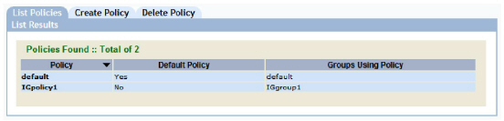
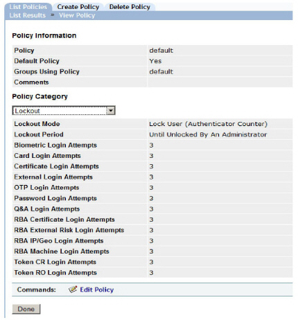
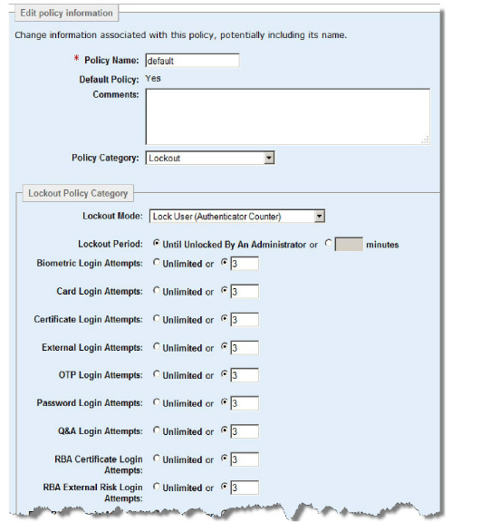

|
IdentityGuard Server 13.0 Administration Guide |
|
IdentityGuard Server 13.0 Administration Guide |
A user becomes locked out when they enter incorrect login information too many times. For a detailed discussion on lockouts, see IP/Geolocation policies.
Through the Administration interface, you can set lockout policies, which determine the behavior of the lockouts.
1. Log in to the Entrust IdentityGuard Administration interface as the administrator.
 On the
Windows computer where Entrust IdentityGuard is installed
On the
Windows computer where Entrust IdentityGuard is installed
2. In the main menu, click Policies.
A list of all policies appears on the List Policies tab.

3. Click any policy name to view its policy information.
The View Policy page appears and lists all policy settings.
4. From the Policy Category drop-down list, select Lockout .
Note: The following screen capture shows the default lockout policy. Your policy may include fewer items depending on how you set the Lockout Mode setting in the lockout policy. If the policy includes multiple passwords, there will be one password lockout setting for each password.

5. Click Edit Policy.
An editable version of the settings appears.

6. In the Lockout Policy Category pane, configure the following settings:
Click a policy to see its description.
Each of the remaining policy settings specifies the lockout counter for failed login attempts with a specific authentication method. The counter is decremented on each consecutive failed authentication attempt with the same authentication method. When the counter reaches zero, the user is prevented from a making further authentication attempts with that authenticator (locked out). Depending on the lockout mode you selected, the user might also be locked out of all other authentication methods (default), or able to attempt to login with another authentication method.
For details on each setting, see Lockout policies.
7. Click Save Changes. The View Policy page reappears.